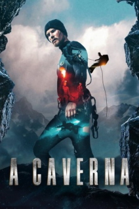

A Caverna: Perigo Subterrâneo (2016)


Go deeper

Avaliação (TMDb):


4.2/10 (60 votos)
Avaliação (Usuário):
Outro Título:Cave
País:Norway, 85 minutos
Idiomas falados:Português, Norueguês
Gênero(s):Aventura, Suspense
Diretor(s):Henrik Martin Dahlsbakken
Codec:MPEG-2 (DVD)
Número: 3245
Sinopse:
Um grupo de ex-militares de elite recebe a missão de explorar um abismo desconhecido. Mas o que eles não sabem é que o pior pesadelo está esperando por eles nas profundezas da terra.
Elenco:
Heidi Toini, Mads Sjøgård Pettersen, Benjamin Helstad, Ingar Helge Gimle
Tipo de mídia: DVD5,
Legendas: Português
Alugado: Não
Tela: 2.35:1